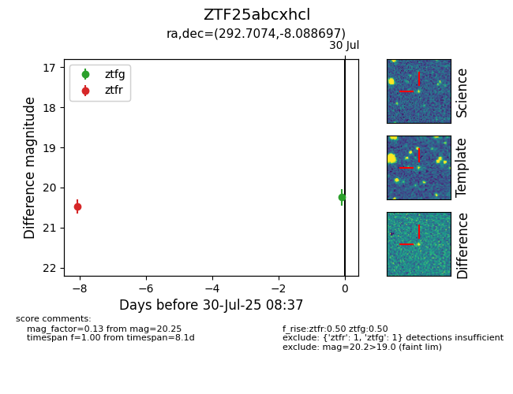

Target ZTF25abcxhcl at 2025-07-30 08:37, see:
FINK: fink-portal.org/ZTF25abcxhcl
Lasair: lasair-ztf.lsst.ac.uk/objects/ZTF25abcxhcl
ALeRCE: alerce.online/object/ZTF25abcxhcl
alt names
ZTF25abcxhcl (ztf,fink)
coordinates:
equatorial (ra, dec) = (292.7074,-8.08870)
galactic (l, b) = (30.1140,-12.40746)
photometry
last ztfg=20.25, ztfr=20.47
1 ztfg, 1 ztfr detections
